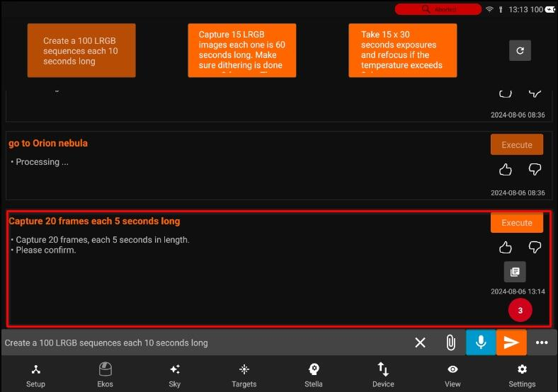
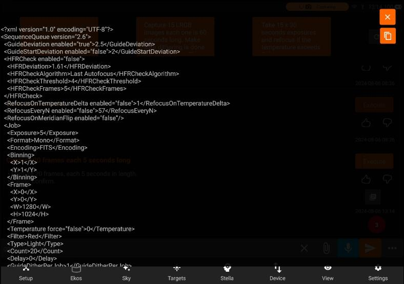
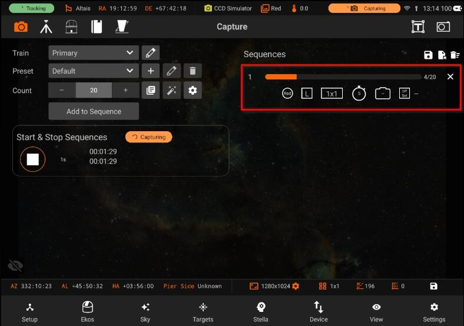

Stella
Stella is a smart assistant for EkosLive & StellarMate App. It can query information from online or offline data sources including your equipment, weather, and environmental conditions.
You can communicate with Stella using natural language via text or voice. To use Stella, the StellarMate App must be connected to the internet. You can command Ekos to perform complex functions including creating image sequences and scheduling targets.
To speak to Stella, press the microphone button and talk. After you complete your request, you can press the microphone button again to transcribe your voice to text. This gives you the chance to edit the text before sending it to Stella. Alternatively, you can directly press the enter button to send the voice request directly to Stella.
It is also integrated with the Targets and View tabs. In targets, use Stella to find targets of interest. For example, you can ask Stella to find all globular clusters above 50 degrees that are brighter than 5th magnitude. For EkosLive Pro subscribers, Stella can also search your cloud images using any number of criteria (e.g. Find all images for Heart Nebula captured in HA filter in the last 2 months). Since all images are uploaded with rich metadata, you can use many fields to narrow your search.
To create sequences, start by saying Capture followed by your request. For example:
Capture 20 frames each 5 seconds long

If Ekos profile is running, Stella will generate an XML file that can be dispatched to Ekos. You can inspect and view this file before Executing it. To execute a request, tap Execute or simply type or say Execute. Once executed, you can go to the Ekos tab to check the progress.


Scheduling targets requires the target name and the sequence details. All requests must start with Schedule.
Schedule M42 and capture 10 frames each 60 seconds long in RGB filters.
If the request is successful, Stella will generate the sequence and scheduler XML files. Stella uses the default settings in your equipment profile and only alters the parameters explicitly set by you in the request.
Each Stella request includes one or more parameters. Depending on the request type, you can specify any of the parameters below:
- Capturing a sequence
- Guide RMS
- Guide Start RMS
- HFR deviation
- HFR Algorithm
- HFR threshold
- HFR check frames
- Refocus delta T
- Refocus time
- Meridian Flip refocusing
- Exposure time
- Color format
- Encoding
- Binning
- Filter
- Type
- Count
- Delay
- Dither setting
- Directory
- Upload Mode
- Flat Duration.
- Scheduling a target
- Target
- Startup Condition
- Minimum altitude
- Weather
- Twilight
- Artificial Horizon
- Step
- Searching targets
- Minimum altitude
- Maximum magnitude
- Type of object
- Direction
- Minimum duration
- Minimum FOV
- Maximum FOV
- Julian Date
- Filtering images
- Filter
- Frame
- Minimum and maximum air mass
- Binning
- Date
- Minimum and maximum exposure
- Object name